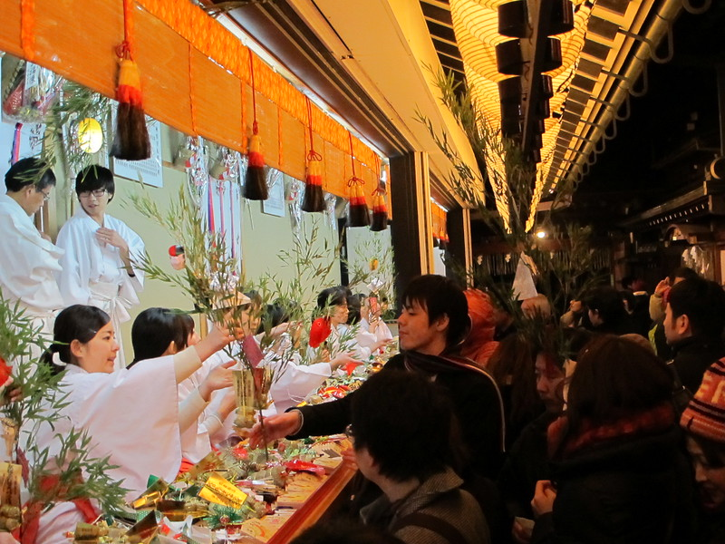
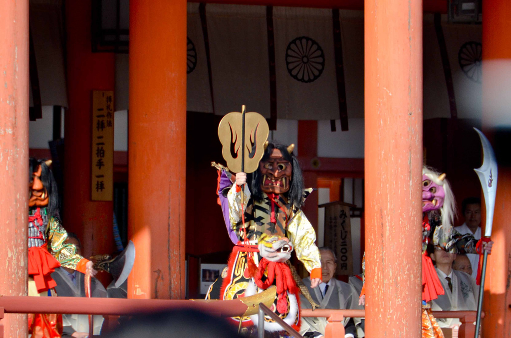
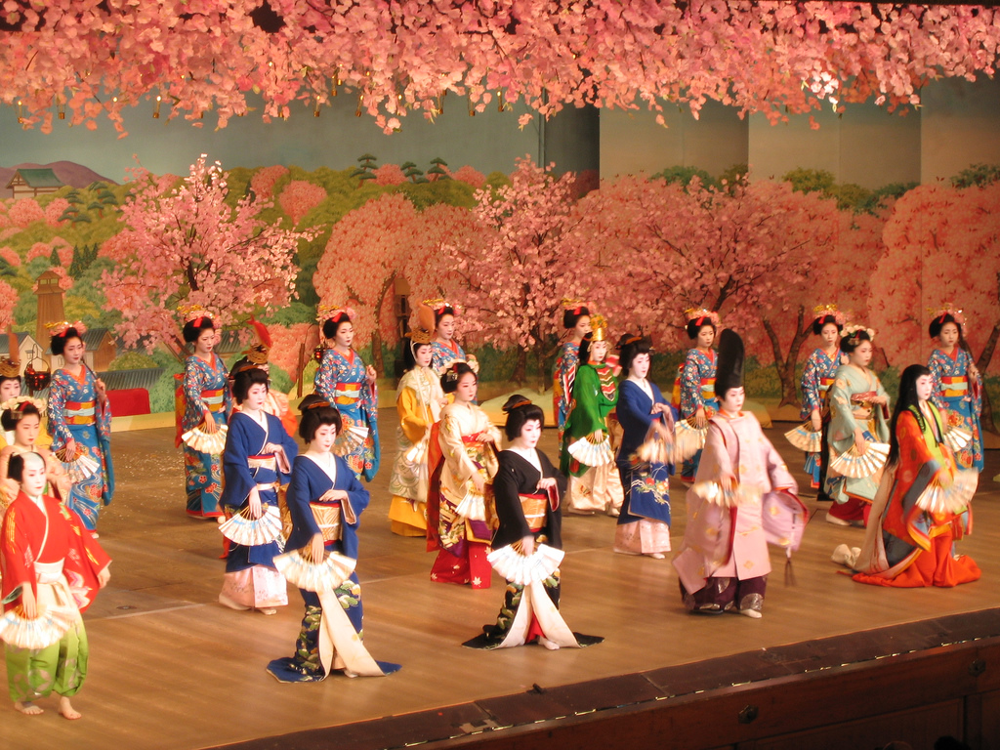
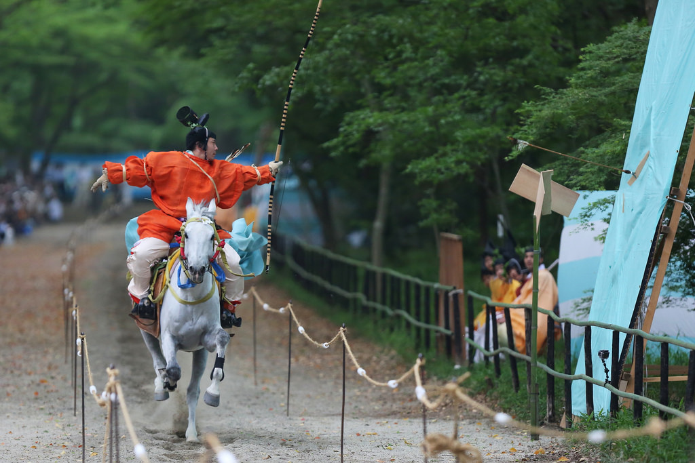

The Kyoto year is packed with interesting festivals and events. Here
is a summary of Kyoto’s biggest and most interesting annual festivals
and events.
Cultural Festivals

Hatsumode
1,2,3 January
Kyotoites visit either their local neighborhood shrine or one of
Kyoto’s major shrines to pay for luck, success and health in the
New Year

Setsubun
3 February
Setsubun marks the beginning of spring according to the old lunar
calendar in Japan. Because it marks a new beginning, at home,
people throw roasted soybeans out the door of their houses while
shouting “Oni wa soto! Fuku wa uchi!” (Devils out! Good luck in!).

Kitano Odori Geisha Dance
July 31, 2021
Each of Kyoto’s five geisha districts holds a major series of
dance performances once a year. Four of these happen in the spring

Yabusame Shinji
3 May
Yabusame, or horseback archery, is Japan’s most thrilling sport
and this is your best chance to see it.